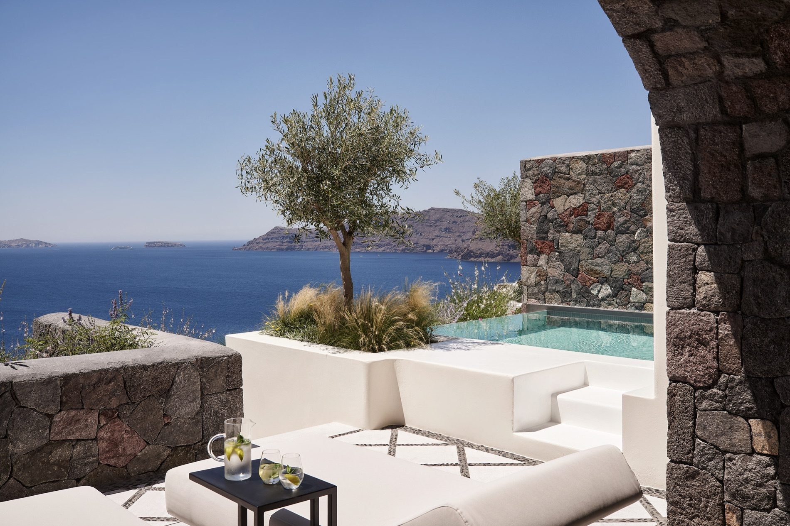

My Dream Greece Honeymoon: Five Islands, Fourteen Nights, Zero Ferries
The exact itinerary I'd book for myself — and the one I build most often for couples who want the Cyclades without the logistics.
Almost every Greece honeymoon I'm asked to fix has the same problem. It isn't the hotels — people research those to death. It's the days in between. Two islands that look adjacent on a map turn out to be four hours apart with a 7:10am departure, and a couple who came for a slow, romantic two weeks spends a third of it dragging luggage down a concrete pier in the sun.
So this is the version I'd book for myself: five islands in fourteen nights, every leg on a private boat or helicopter, and not one ferry terminal. It's ambitious on paper and unhurried in practice, because the transfers are short, they run when you want them to, and nobody is checking a schedule at breakfast.
| Island | Where you stay | Nights |
|---|---|---|
| Mykonos | Bill & Coo Coast | 2 |
| Paros | Parīlio | 3 |
| Sifnos | Stamna | 3 |
| Santorini | Canaves Oia Suites | 3 |
| Folegandros | Gundari | 3 |
MYKONOS · NIGHTS 1–2
Two nights, not four. Mykonos is where your flight lands and where jet lag gets absorbed, and Bill & Coo Coast is the version of the island that doesn't shout — Agios Ioannis bay, sunset facing, ten minutes from town but nowhere near it in feel.
Book the Grand Suite with Pool. The rate difference over an entry-level room buys you a private pool you'll spend most of day one in, which is precisely what day one is for. Lunch at Kiki's Tavern — no electricity, no reservations, and worth the wait. Sundowners at Scorpios, dinner in town, and then you leave before Mykonos becomes the whole trip.

PAROS · NIGHTS 3–5
A forty-minute private helicopter charter south, and the pace changes completely. Parīlio is the quiet, architectural one — stone, arches, and a courtyard that looks like nowhere else in Greece. The Sun Suite gives you a private pool and enough terrace to eat breakfast outside without negotiating for shade.
Days go to Kolymbithres and Santa Maria, both genuinely calm before noon. Dinner at Sigi Ikthios on the Naoussa harbor after dark, when the fishing boats are lit and the town is at its best. Somewhere in the middle, a tasting at Moraitis — the island's old winery, five minutes from town, and a good afternoon when you want one thing on the schedule instead of none.

SIFNOS · NIGHTS 6–8
This is the island people haven't been told about, and the reason I put it in the middle of the trip rather than at the end. Sifnos is the food island — pottery, farms, and taverna cooking that other Cyclades restaurants quietly copy. Stamna is small and modern and sits above Platys Gialos; the Suite with Private Pool is the one to hold out for.
Do the pottery studios in Vathi, still family-run and still using the same clay. Do a cooking class at Narlis Farm — it's the single activity honeymooners write to me about afterward more than any other. And walk the Kastro–Chrissopigi trail late in the day, ending with dinner at Cantina right on the water.

SANTORINI · NIGHTS 9–11
Santorini earns its place, but only on the right terms: three nights, in Oia, in a room with its own pool, doing very little in public. Canaves Oia Suites is my long-standing first recommendation on the island, and the River Pool Suite is why — a private plunge pool on the caldera edge and a terrace you'll happily take dinner on.
Skip the sunset scrum at the castle. Do assyrtiko at Domaine Sigalas mid-afternoon instead, then a private caldera sail out of Ammoudi — just the two of you and a crew, which costs less than couples expect and reframes the entire island. Come back, eat on the terrace, get in the jacuzzi.

FOLEGANDROS · NIGHTS 12–14
Ending here is the whole argument of this itinerary. Folegandros has one road, no crowds, and cliffs that make Santorini look busy — and Gundari, which opened as the island's first real luxury hotel and is one of the most striking properties built in Greece in years. The Superior Cave Suite is cut into the rock with its own pool and views straight down to the sea.
Take a boat to Katergo — there's no other way to reach it. Eat at Orizon, Gundari's own kitchen on the cliff, at least twice. And on your last evening, climb to the Panagia church above Chora at golden hour, which is the image most couples come home with.

WHEN TO GO
Late May to mid-June and the first three weeks of September are the two windows I push hardest for. The sea is warm, the light is long, the good tables are gettable, and the meltemi — the north wind that can cancel a boat transfer in July and August — is far less of a factor.
July and August work, but you're paying peak rates for a busier version of the same trip. October is beautiful and cheaper, with the caveat that some hotels on the smaller islands begin closing after the first week.
Booked as written — those five hotels, those room categories, private transfers between every island — this runs roughly $26,000–$34,000 for two, for fourteen nights, excluding international flights. Shoulder season sits at the bottom of that range; August sits above it.
The transfers are the biggest single lever. Run the same route on ferries instead of private boats and you'll save roughly $5,000–$7,000 across the two weeks — real money, and worth saying out loud. What you spend instead is time: early departures, port waits, and the odd cancelled crossing in a windy week.
It flexes elsewhere too. Dropping to entry-level rooms at three of the five hotels takes a meaningful amount off without touching the shape of the trip, and a hybrid — private boats on the two legs where the ferry schedule is genuinely bad, scheduled ferries on the rest — is where most of my couples land.
QUESTIONS I GET ASKED
Is five islands in fourteen nights too many?
Not at this pace, because no stop is shorter than two nights and no transfer eats a day. What makes multi-island trips exhausting isn't the number of islands — it's ferry mornings. Remove those and five is comfortable.
How much do private transfers actually add?
Across a route like this one, about $5,000–$7,000 over the two weeks. Whether that's worth it depends entirely on how you value the mornings you get back — for a fourteen-night honeymoon I usually think it is, but it's a real number and you should decide it deliberately rather than have it assumed for you.
Do we need to start in Mykonos?
No — it's simply the easiest arrival airport and the softest landing. The route also works starting in Santorini and running the other direction, which is sometimes better depending on your flights home.
Can this be done in ten nights?
Yes, at four islands. I'd cut Mykonos and fly straight to Paros, then run Paros–Sifnos–Santorini–Folegandros. Cutting a night from each island instead is the version I'd talk you out of.
How far ahead should we book?
Nine to twelve months for June and September. The specific rooms in this itinerary — the pool suites — are the first to go, and they're the entire reason the trip feels the way it does.

Get the itineraries and hotel notes I don't post publicly, once a month.
Join the list →I answer DMs myself. Send me your dates and where you're stuck.
DM on Instagram →